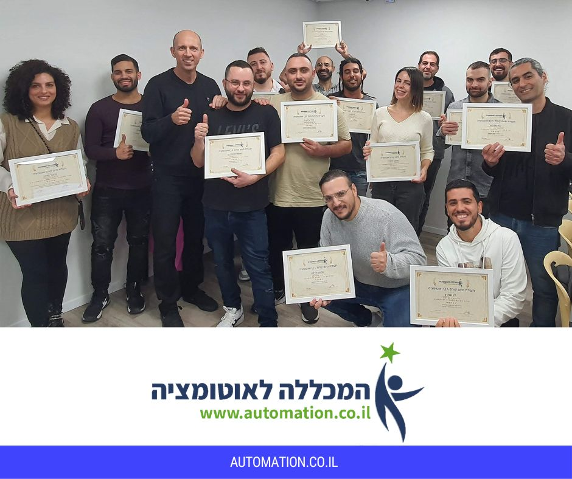

Java is a versatile, object-oriented programming language widely used for building cross-platform applications.
Known for its portability across different environments, Java enables developers to write code once and run it anywhere. It is commonly used for web and mobile applications, enterprise software, and large systems development.
TestNG is a testing framework inspired by JUnit and NUnit but designed to be more powerful and easier to use. It provides annotations, flexible test configuration, and powerful test execution and reporting capabilities. TestNG is often used for automating tests in Java applications, supporting both unit and integration testing.
Selenium WebDriver is a web automation tool that allows developers to create and execute tests on web applications across various browsers. It provides a programming interface to interact with web elements, simulating user actions like clicks and form submissions. Selenium WebDriver is widely used for functional and regression testing of web applications.
